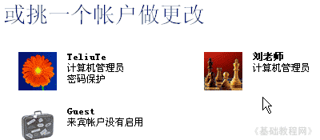
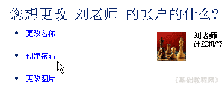
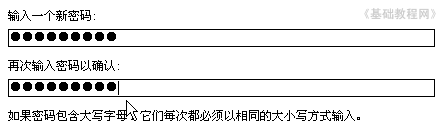
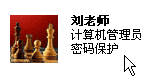
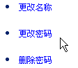

电脑操作基础
十二、设置密码 返回
公用机子上，或者想防止别人随意打开电脑，可以给自己的用户加上密码，这样在进入系统的时候会提示输入密码；
1、进入控制面板
1）点“开始－控制面板”进入控制面板窗口；
2）在窗口中找到“用户帐户”图标，点击进入；
3）在下面的“挑一个帐户”中，选择自己的帐户，点击进入；

2、设置密码
1）在左边选择“创建密码”，点击进入；

2）上面提示密码安全，在中间输入密码，注意密码是不让看到的，都是用圆点(或星号)来表示，
密码用字母和数字混合，8位以上比较好，起密码可以用谐音，比如2007可以改成“er0ling7”，
密码输入两遍一样的，然后点下面的“创建密码”；

3）成功后返回到开始页面，帐户图标中出现“密码保护”；

4）修改密码跟创建类似，只是在开始页中选择“更改密码”，然后按提示操作即可；

本节学习了在WinXP中创建用户密码的基本方法，如果你成功地完成了练习，请继续学习下一课内容；
本教程由86团学校TeliuTe制作|著作权所有
基础教程网：http://teliute.org/
美丽的校园……
转载和引用本站内容，请保留版权信息和本站链接。